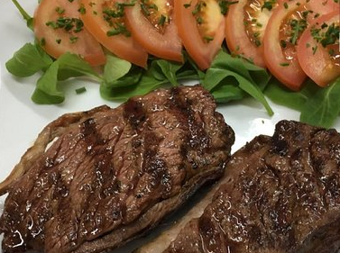

Empanadas de carne
Receta/RecipeUna empanada increíblemente sabrosa rellena de una carne muy jugosa y con una salsa de tomates, cebollas y morrones frescos, realmente deliciosa. Al cocinarse adquiere un color dorado y muy tentador.
An incredibly tasty empanada filled with a very juicy meat and with a sauce of fresh tomatoes, onions and peppers, really delicious. When cooked it acquires a golden color and very tempting.
Precio/Price: $118
